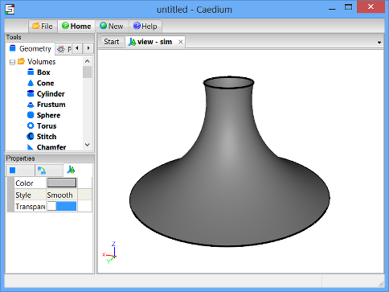

Double-Sided Membrane
Embed a membrane (face) from an Alias/Wavefront (.obj) file as a double-sided membrane in a flow volume. ixCube 4-10 (the successor to ixForten 4000) can export membranes as .obj files and this tutorial describes how to embed such a membrane in a flow volume ready for CFD analysis.

Goals
In this tutorial, you will learn how to:
- Import a faceted (.obj) geometry
- Create axes
- Create a cylinder
- Translate a volume
- Embed a face in a volume
- Convert an embedded face into a double-sided membrane
Assumptions
- You have activated the Caedium Builder and Caedium Exchange add-ons or Caedium Professional.
- You are familiar with Caedium essentials.
- You have downloaded the Alias/Wavefront facet file membrane.obj.
Import the Faceted (.obj) File into Caedium
Select the File Toolbar and click the Import button  . Select Geometry as the file type and navigate to the location of the membrane.obj file you downloaded. Double-click on membrane.obj to import the membrane into Caedium.
. Select Geometry as the file type and navigate to the location of the membrane.obj file you downloaded. Double-click on membrane.obj to import the membrane into Caedium.
To see the outline (edges), rotate (left-click-and-drag the mouse) and zoom (rotate the mouse wheel) the view in the View Window until the membrane is in the approximate orientation shown below.
Shade the face to confirm it was imported correctly. Right-click on the View Window (view) background, double-click sim->Faces, and then select Properties from the menu. In the Properties Panel, turn off the Transparent property to make the face visible (shaded).
In the Home Toolbar click the Undo button  to restore the view to only edges.
to restore the view to only edges.
Create Axes
In the Geometry Tool Palette, select the Others->Axes tool. Drag and drop it onto the larger membrane edge (edge) in the View Window (view). Double-click edge in the Select dialog and select Done to create axes (axes) at the center of the edge.
Create a Cylinder using Axes
Select the Volumes->Cylinder tool. In the Properties Panel, set the Radius to 30 and set the Z Height to 20. Press Enter on the keyboard to apply the changes to the Properties Panel.
We want an outer boundary for the flow volume that lies beyond the influence of the air flow around the membrane, so we set a diameter of 30m, which is 6x the membrane diameter, and a height of 20m, which is about 6x the height of the membrane.
Drag and drop the Volumes->Cylinder tool onto the axes (axes) in the View Window (view). Select Done to create a cylinder (volume). In the Home Toolbar click the Fit-All button  to see the cylinder in the View Window.
to see the cylinder in the View Window.
Translate the Cylinder
To translate the cylinder (volume) to a new location in the View Window, select the Transforms->Translate tool. In the Properties Panel set Translate to [0 0 -1].
Drag the Transforms->Translate tool and drop it directly onto an edge of the cylinder in the View Window. Select Done to translate the cylinder.
This operation positions the base (ground) of the cylinder 1m below the base of the membrane.
Subtract the Membrane from the Cylinder
Select the Booleans->Subtract tool. In the Properties Panel turn on the Topology Only property.
Drag and drop the Booleans->Subtract tool directly onto an edge of the cylinder. Double-click volume in the Select dialog to select the cylinder. Select Select/Deselect from the menu, right-click on a edge of the membrane (membrane), and then double-click membrane in the Select dialog to select the membrane. Select Done to subtract the membrane from the cylinder and create the volume (volume_1).
A Topology Only operation relates only to the way geometry is associated or connected, it does not change the shape of the geometry. In this operation the Topology Only option allows the creation of a non-manifold topology.
Create a Double-Sided Membrane
Drag and drop the Faces->2 Sided tool directly onto an edge of the membrane. Double-click face_6 (previously membrane) in the Select dialog to select the membrane. Select Done to convert the membrane into a double-sided face. A new volume (volume_2) that includes a new face (face_6-shadow) will replace the original volume (volume_1).
Only faces embedded in a volume can be converted to double-sided faces. Also the double-sided conversion must be the last construction operation you perform on the volume.
Notes
The complete geometry created in this tutorial is available as a free download at membrane.sym.
See the "Flow Over a Double-Sided Membrane" tutorial for a flow simulation using this geometry.
Feedback
Questions? Ideas? Problems?